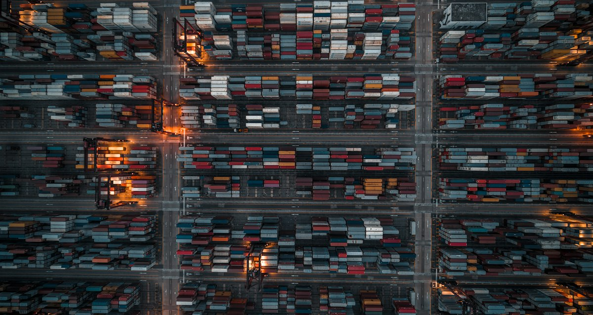

Mitra terpercaya proyek jalan tol, jembatan bentang panjang, gedung komersial, dan fasilitas manufaktur modern dengan jaminan mutu SNI, armada berat mandiri, dan komitmen Zero Accident.
140+
Proyek Selesai
Jalan tol, gedung & pabrik
4.850.000+
Jam Kerja Selamat
Zero Fatalities (LTI-Free)
58 Unit
Armada Alat Berat
Milik sendiri & SILO aktif
120 m³/jam
Kapasitas Batching
Pabrik beton readymix mandiri
ISO 9001:2015
Sistem Manajemen Mutu
ISO 45001:2018
Sistem K3 Konstruksi
ISO 14001:2015
Manajemen Lingkungan
SBU Jasa Konstruksi
Kualifikasi B2 (Besar)
Mitra Proyek B2B & Pengembang Industri (Nama Perusahaan Fiktif Demo Portofolio):
Kami memecahkan hambatan terbesar dalam industri konstruksi: keterlambatan jadwal, pembengkakan anggaran akibat cold joint beton, dan risiko kecelakaan kerja fatal.
Jaminan pasokan ready-mix segar langsung dari yard kami di Narogong, menjaga slump beton dan menghilangkan downtime tunggu mixer di site proyek.
Penerapan 100% toolbox meeting harian dan Stop Work Authority memastikan setiap pekerja pulang selamat ke keluarga mereka setiap hari.
Deteksi tabrakan pipa dan struktur (clash detection) sebelum pemotongan baja serta sinkronisasi jadwal Kurva-S dengan anggaran material real-time.
58 unit excavator, crane, dozer, dan roller milik sendiri terpantau sensor GPS 24 jam untuk pencegahan kerusakan dini dan percepatan mobilisasi.
 Divisi 01
Divisi 01
Perkantoran bertingkat, rumah sakit, hotel, dan mal dengan struktur tahan gempa SNI 1726 dan fasad curtain wall low-E.
 Divisi 02
Divisi 02
Perkerasan kaku (rigid pavement) kuat lentur Fs 4.5 MPa, jembatan gelagar pratekan bentang hingga 50m, dan stabilisasi tanah lunak PVD.
 Divisi 03
Divisi 03
Instalasi gardu induk TM 20kV, genset darurat, sistem chiller HVAC industri, dan instalasi proteksi kebakaran bersertifikasi NFPA.
 Divisi 04
Divisi 04
Fasilitas logistik bentang bebas baja WF > 45 meter, lantai beton superflat FM2 toleransi VNA, dan loading dock hidrolik.
 Jalan & Tol
Selesai 2025
Jalan & Tol
Selesai 2025
Pembangunan 6,8 km jalan tol perkerasan kaku dan jembatan rangka baja SM490 melintasi tanah lunak aluvial sedalam 14 meter dengan mitigasi PVD 320.000 meter.
Buka Studi Kasus Rekayasa Pabrik & Gudang
Selesai 2024
Pabrik & Gudang
Selesai 2024
Fasilitas logistik 42.000 m² dengan lantai superflat FM2 laser screed untuk forklift VNA dan 36 pintu loading dock hidrolik diselesaikan dalam 10 bulan.
Buka Studi Kasus Rekayasa"Ketepatan waktu erection rangka baja jembatan dan dedikasi batching plant di site mereka sendiri sangat membantu kami melewati musim hujan tanpa penundaan Kurva-S proyek."
Ir. Pratama Kusuma
Project Director, PT Trans Marga (Contoh)
"Lantai superflat TR34 FM2 di gudang logistik Cikarang kami lulus pengujian profil Dipstick tanpa satu pun deviasi yang membahayakan mast forklift rak 14 meter."
Hendri Wijaya
VP Supply Chain & Asset (Contoh)
"Standar HSE mereka bukan sekadar formalitas di atas kertas. Penegakan isolasi energi LOTO dan izin angkat crane dijalankan dengan disiplin militer."
Ir. Siti Rahmawati
Kepala Manajemen Konstruksi (Contoh)
Jawaban komprehensif bagi Pejabat Pembuat Komitmen (PPK), Konsultan Manajemen Konstruksi, dan Tim Pengadaan:
Ya. Kami memiliki fasilitas penerbitan Jaminan Penawaran (Bid Bond), Jaminan Pelaksanaan (Performance Bond), Jaminan Uang Muka (Advance Payment Bond), dan Jaminan Pemeliharaan (Retention Bond) dari Bank BUMN terkemuka (Bank Mandiri, BRI, BNI) serta perusahaan asuransi penjaminan nasional.
Batching plant utama kami di Cileungsi melayani wilayah Jabodetabek, Bogor, Karawang, dan Cikarang dengan waktu tempuh maksimal 90 menit menggunakan retarder admixture khusus. Untuk proyek infrastruktur jalan tol di luar jangkauan tersebut, kami menyediakan opsi mobilisasi On-Site Mobile Batching Plant kapasitas 60 m³/jam langsung di koridor proyek.
Kami menerapkan dashboard digital terpadu berbasis cloud yang memuat rekaman Kurva-S, data cuaca harian, dokumentasi foto drone mingguan resolusi tinggi, hasil uji tekan beton laboratorium, serta log inspeksi K3 yang dapat diakses secara transparan oleh perwakilan owner dan konsultan MK setiap saat.
Ya. Divisi Engineering Design internal kami dilengkapi tim arsitek, ahli geoteknik, insinyur struktur berlisensi SKA/SKK Utama, dan permodel BIM Tekla/Revit yang berpengalaman menyelesaikan proyek dari tahap konsep arsitektural, perizinan PBG/SLF, hingga konstruksi fisik terima kunci (turnkey).
Klausul eskalasi diatur sesuai standar FIDIC atau Peraturan LKPP, di mana penyesuaian indeks harga material berpedoman pada publikasi resmi BPS (Badan Pusat Statistik) dan dituangkan dalam adendum kontrak resmi yang disepakati kedua belah pihak secara transparan.
Standar masa pemeliharaan kami berkisar antara 6 hingga 12 bulan (atau sesuai kesepakatan RKS kontrak tender). Selama periode retensi tersebut, tim purna-jual kami siap melakukan inspeksi berkala dan perbaikan cacat mutu tanpa biaya tambahan bagi owner.
Kirimkan kerangka acuan kerja (RKS) dan dokumen BoQ untuk mendapatkan penawaran teknis terperinci, jadwal CPM realistis, dan asistensi survei geoteknik awal.